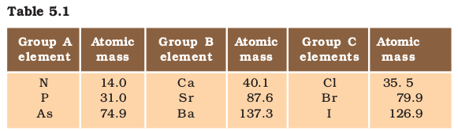
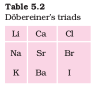
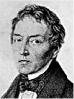
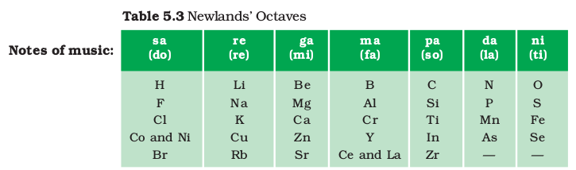
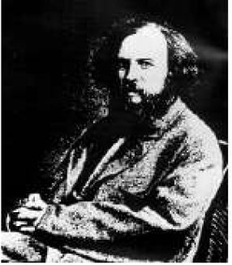
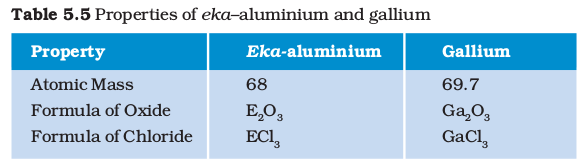

In Class IX we have learnt that matter around us is present in the form of elements, compounds and mixtures and the elements contain atoms of only one type. Do you know how many elements are known till date? At present, 118 elements are known to us. All these have different properties. Out of these 118, only 94 are naturally occurring.
As different elements were being discovered, scientists gathered more and more information about the properties of these elements. They found it difficult to organise all that was known about the elements. They started looking for some pattern in their properties, on the basis of which they could study such a large number of elements with ease.
Figure 5.1 Imagine you and your friends have found pieces of an old map to reach a treasure. Would it be easy or chaotic to find the way to the treasure? Similar chaos was there in Chemistry as elements were known but there was no clue as to how to classify and study about them.
5.1 Making Order Out of Chaos – early attempts at the classification of elements
We have been learning how various things or living beings can be classified on the basis of their properties. Even in other situations, we come across instances of organisation based on some properties. For example, in a shop, soaps are kept together at one place while biscuits are kept together elsewhere. Even among soaps, bathing soaps are stacked separately from washing soaps. Similarly, scientists made several attempts to classify elements according to their properties and obtain an orderly arrangement out of chaos.
The earliest attempt to classify the elements resulted in grouping the then known elements as metals and non-metals. Later further classifications were tried out as our knowledge of elements and their properties increased.
5.1.1 Döbereiner’s Triads
In the year 1817, Johann Wolfgang Döbereiner, a German chemist, tried to arrange the elements with similar properties into groups. He identified some groups having three elements each. So he called these groups ‘triads’. Döbereiner showed that when the three elements in a triad were written in the order of increasing atomic masses; the atomic mass of the middle element was roughly the average of the atomic masses of the other two elements.
For example, take the triad consisting of lithium (Li), sodium (Na) and potassium (K) with the respective atomic masses 6.9, 23.0 and 39.0. What is the average of the atomic masses of Li and K? How does this compare with the atomic mass of Na?
Given below (Table 5.1) are some groups of three elements. These elements are arranged downwards in order of increasing atomic masses. Can you find out which of these groups form Döbereiner triads?

You will find that groups B and C form Döbereiner triads. Döbereiner could identify only three triads from the elements known at that time (Table 5.2). Hence, this system of classification into triads was not found to be useful.

Johann Wolfgang Döbereiner (1780-1849)

Johann Wolfgang Döbereiner studied as a pharmacist at Münchberg in Germany, and then studied chemistry at Strasbourg. Eventually he became a professor of chemistry and pharmacy at the University of Jena. Döbereiner made the first observations on platinum as a catalyst and discovered similar triads of elements which led to the development of the Periodic Table of elements.
5.1.2 Newlands’ Law of Octaves
The attempts of Döbereiner encouraged other chemists to correlate the properties of elements with their atomic masses. In 1866, John Newlands, an English scientist, arranged the then known elements in the order of increasing atomic masses. He started with the element having the lowest atomic mass (hydrogen) and ended at thorium which was the 56th element. He found that every eighth element had properties similar to that of the first. He compared this to the octaves found in music. Therefore, he called it the ‘Law of Octaves’. It is known as ‘Newlands’ Law of Octaves’. In Newlands’ Octaves, the properties of lithium and sodium were found to be the same. Sodium is the eighth element after lithium. Similarly, beryllium and magnesium resemble each other. A part of the original form of Newlands’ Octaves is given in Table 5.3.

DO YOU KNOW?
Are you familiar with musical notes?
In the Indian system of music, there are seven musical notes in a scale – sa, re, ga, ma, pa, da, ni. In the west, they use the notations – do, re, mi, fa, so, la, ti. The notes in a scale are separated by whole and half-step frequency intervals of tones and semitones. A musician uses these notes for composing the music of a song. Naturally, there must be some repetition of notes. Every eighth note is similar to the first one and it is the first note of the next scale.
Thus, Newlands’ Law of Octaves worked well with lighter elements only.
Questions
1. Did Döbereiner’s triads also exist in the columns of Newlands’ Octaves? Compare and find out.
2. What were the limitations of Döbereiner’s classification?
3. What were the limitations of Newlands’ Law of Octaves?
5.2 MAKING ORDER OUT OF CHAOS – Mendeléev’S Periodic Table
Even after the rejection of Newlands’ Law of Octaves, many scientists continued to search for a pattern that correlated the properties of elements with their atomic masses.
The main credit for classifying elements goes to Dmitri Ivanovich Mendeléev, a Russian chemist. He was the most important contributor to the early development of a Periodic Table of elements wherein the elements were arranged on the basis of their fundamental property, the atomic mass, and also on the similarity of chemical properties.
Dmitri lvanovich Mendeléev (1834-1907)

Dmitri lvanovich Mendeléev was born in Tobolsk in Western Siberia, Russia on 8 February 1834. After his early education, Mendeléev could join a university only due to the efforts of his mother. Dedicating his investigations to his mother he wrote, “She instructed with example, corrected with love and travelled with me to places spending her last resources and strength. She knew that with the aid of science without violence, with love but firmness, all superstitions, untruth and errors can be removed.” The arrangement of elements he proposed is called Mendeléev’s Periodic Table. The Periodic Table proved to be the unifying principle in chemistry. It was the motivation for the discovery of some new elements.
When Mendeléev started his work, 63 elements were known. He examined the relationship between the atomic masses of the elements and their physical and chemical properties. Among chemical properties, Mendeléev concentrated on the compounds formed by elements with oxygen and hydrogen. He selected hydrogen and oxygen as they are very reactive and formed compounds with most elements. The formulae of the hydrides and oxides formed by an element were treated as one of the basic properties of an element for its classification. He then took 63 cards and on each card he wrote down the properties of one element. He sorted out the elements with similar properties and pinned the cards together on a wall. He observed that most of the elements got a place in a Periodic Table and were arranged in the order of their increasing atomic masses. It was also observed that there occurs a periodic recurrence of elements with similar physical and chemical properties. On this basis, Mendeléev formulated a Periodic Law, which states that ‘the properties of elements are the periodic function of their atomic masses’.
Mendeléev’s Periodic Table contains vertical columns called ‘groups’ and horizontal rows called ‘periods’ (Table 5.4).
Table 5.4 Mendeléev’s Periodic Table
Mendeléev’s Periodic Table was published in a German journal in 1872. In the formula for oxides and hydrides at the top of the columns, the letter ‘R’ is used to represent any of the elements in the group. Note the way formulae are written. For example, the hydride of carbon, CH4, is written as RH4 and the oxide CO2, as RO2.
5.2.1 Achievements of Mendeléev’s Periodic Table
While developing the Periodic Table, there were a few instances where Mendeléev had to place an element with a slightly greater atomic mass before an element with a slightly lower atomic mass. The sequence was inverted so that elements with similar properties could be grouped together. For example, cobalt (atomic mass 58.9) appeared before nickel (atomic mass 58.7). Looking at Table 5.4, can you find out one more such anomaly?
Further, Mendeléev left some gaps in his Periodic Table. Instead of looking upon these gaps as defects, Mendeléev boldly predicted the existence of some elements that had not been discovered at that time. Mendeléev named them by prefixing a Sanskrit numeral, Eka (one) to the name of preceding element in the same group. For instance, scandium, gallium and germanium, discovered later, have properties similar to Eka–boron, Eka–aluminium and Eka–silicon, respectively. The properties of Eka–Aluminium predicted by Mendeléev and those of the element, gallium which was discovered later and replaced Eka-aluminium, are listed as follows (Table 5.5).

This provided convincing evidence for both the correctness and usefulness of Mendeléev’s Periodic Table. Further, it was the extraordinary success of Mendeléev’s prediction that led chemists not only to accept his Periodic Table but also recognise him, as the originator of the concept on which it is based. Noble gases like helium (He), neon (Ne) and argon (Ar) have been mentioned in many a context before this. These gases were discovered very late because they are very inert and present in extremely low concentrations in our atmosphere. One of the strengths of Mendeléev’s Periodic Table was that, when these gases were discovered, they could be placed in a new group without disturbing the existing order.
5.2.2 Limitations of Mendeléev’s Classification
Electronic configuration of hydrogen resembles that of alkali metals. Like alkali metals, hydrogen combines with halogens, oxygen and sulphur to form compounds having similar formulae, as shown in the examples here.
On the other hand, just like halogens, hydrogen also exists as diatomic molecules and it combines with metals and non-metals to form covalent compounds.
Activity 5.1
Certainly, no fixed position can be given to hydrogen in the Periodic Table. This was the first limitation of Mendeléev’s Periodic Table. He could not assign a correct position to hydrogen in his Table.
Isotopes were discovered long after Mendeléev had proposed his periodic classification of elements. Let us recall that isotopes of an element have similar chemical properties, but different atomic masses.
Activity 5.2
Thus, isotopes of all elements posed a challenge to Mendeleev’s Periodic Law. Another problem was that the atomic masses do not increase in a regular manner in going from one element to the next. So it was not possible to predict how many elements could be discovered between two elements — especially when we consider the heavier elements.
Questions
1. Use Mendeléev’s Periodic Table to predict the formulae for the oxides of the following elements:
K, C, AI, Si, Ba.
2. Besides gallium, which other elements have since been discovered that were left by Mendeléev in his Periodic Table? (any two)
3. What were the criteria used by Mendeléev in creating his Periodic Table?
4. Why do you think the noble gases are placed in a separate group?
5.3 MAKING ORDER OUT OF CHAOS – THE MODERN PERIODIC TABLE
In 1913, Henry Moseley showed that the atomic number of an element is a more fundamental property than its atomic mass as described below. Accordingly, Mendeléev’s Periodic Law was modified and atomic number was adopted as the basis of Modern Periodic Table and the Modern Periodic Law can be stated as follows:
‘Properties of elements are a periodic function of their atomic number.’
Let us recall that the atomic number gives us the number of protons in the nucleus of an atom and this number increases by one in going from one element to the next. Elements, when arranged in order of increasing atomic number, lead us to the classification known as the Modern Periodic Table (Table 5.6). Prediction of properties of elements could be made with more precision when elements were arranged on the basis of increasing atomic number.
Activity 5.3
Table 5.6 Modern Periodic Table
As we can see, the Modern Periodic Table takes care of three limitations of Mendléev’s Periodic Table. The anomalous position of hydrogen can be discussed after we see what are the bases on which the position of an element in the Modern Periodic Table depends.
5.3.1 Position of Elements in the Modern Periodic Table
The Modern Periodic Table has 18 vertical columns known as ‘groups’ and 7 horizontal rows known as ‘periods’. Let us see what decides the placing of an element in a certain group and period.
Activity 5.4
You will find that all these elements contain the same number of valence electrons. Similarly, you will find that the elements present in any one group have the same number of valence electrons. For example, elements fluorine (F) and chlorine (Cl), belong to group 17, how many electrons do fluorine and chlorine have in their outermost shells? Hence, we can say that groups in the Periodic Table signify an identical outer-shell electronic configuration. On the other hand, the number of shells increases as we go down the group.
There is an anomaly when it comes to the position of hydrogen because it can be placed either in group 1 or group 17 in the first period. Can you say why?
Activity 5.5
You will find that these elements of second period do not have the same number of valence electrons, but they contain the same number of shells. You also observe that the number of valence shell electrons increases by one unit, as the atomic number increases by one unit on moving from left to right in a period.
Or we can say that atoms of different elements with the same number of occupied shells are placed in the same period. Na, Mg, Al, Si, P, S, Cl and Ar belong to the third period of the Modern Periodic Table, since the electrons in the atoms of these elements are filled in K, L and M shells. Write the electronic configuration of these elements and confirm the above statement. Each period marks a new electronic shell getting filled.
How many elements are there in the first, second, third and fourth periods?
We can explain the number of elements in these periods based on how electrons are filled into various shells. You will study the details of this in higher classes. Recall that the maximum number of electrons that can be accommodated in a shell depends on the formula 2n2 where ‘n’ is the number of the given shell from the nucleus.
For example,
K Shell – 2 × (1)2 = 2, hence the first period has 2 elements.
L Shell – 2 × (2)2 = 8, hence the second period has 8 elements.
The third, fourth, fifth, sixth and seventh periods have 8, 18, 18, 32 and 32 elements respectively.
The reason for this you will study in higher classes.
The position of an element in the Periodic Table tells us about its chemical reactivity. As you have learnt, the valence electrons determine the kind and number of bonds formed by an element. Can you now say why Mendeléev’s choice of formulae of compounds as the basis for deciding the position of an element in his Table was a good one? How would this lead to elements with similar chemical properties being placed in the same group?
5.3.2 Trends in the Modern Periodic Table
Valency : As you know, the valency of an element is determined by the number of valence electrons present in the outermost shell of its atom.
Activity 5.6
Atomic size: The term atomic size refers to the radius of an atom. The atomic size may be visualised as the distance between the centre of the nucleus and the outermost shell of an isolated atom. The atomic radius of hydrogen atom is 37 pm (picometre, 1 pm = 10–12m).
Let us study the variation of atomic size in a group and in a period.
Activity 5.7
Period II elements : B Be O N Li C
Atomic radius (pm) : 88 111 66 74 152 77
You will see that the atomic radius decreases in moving from left to right along a period. This is due to an increase in nuclear charge which tends to pull the electrons closer to the nucleus and reduces the size of the atom.
Activity 5.8
Group 1 Elements : Na Li Rb Cs K
Atomic Radius (pm) : 186 152 244 262 231
You will see that the atomic size increases down the group. This is because new shells are being added as we go down the group. This increases the distance between the outermost electrons and the nucleus so that the atomic size increases in spite of the increase in nuclear charge.
Metallic and Non-metallic Properties
Activity 5.9
As we can see, the metals like Na and Mg are towards the left-hand side of the Periodic Table while the non-metals like sulphur and chlorine are found on the right-hand side. In the middle, we have silicon, which is classified as a semi-metal or metalloid because it exhibits some properties of both metals and non-metals.
In the Modern Periodic Table, a zig-zag line separates metals from non-metals. The borderline elements – boron, silicon, germanium, arsenic, antimony, tellurium and polonium – are intermediate in properties and are called metalloids or semi-metals.
As you have seen in Chapter 3, metals tend to lose electrons while forming bonds, that is, they are electropositive in nature.
Activity 5.10
As the effective nuclear charge acting on the valence shell electrons increases across a period, the tendency to lose electrons will decrease. Down the group, the effective nuclear charge experienced by valence electrons is decreasing because the outermost electrons are farther away from the nucleus. Therefore, these can be lost easily. Hence metallic character decreases across a period and increases down a group.
Non-metals, on the other hand, are electronegative. They tend to form bonds by gaining electrons. Let us learn about the variation of this property.
Activity 5.11
• How would the tendency to gain electrons change as you go from left to right across a period?
• How would the tendency to gain electrons change as you go down a group?
As the trends in the electronegativity show, non-metals are found on the right-hand side of the Periodic Table towards the top.
These trends also help us to predict the nature of oxides formed by the elements because it is known to you that the oxides of metals are basic and that of non-metals are acidic in general.
QUESTIONS
1. How could the Modern Periodic Table remove various anomalies of Mendeléev’s Periodic Table?
2. Name two elements you would expect to show chemical reactions similar to magnesium. What is the basis for your choice?
3. Name
(a) three elements that have a single electron in their outermost shells.
(b) two elements that have two electrons in their outermost shells.
(c) three elements with filled outermost shells.
4. (a) Lithium, sodium, potassium are all metals that react with water to liberate hydrogen gas. Is there any similarity in the atoms of these elements?
(b) Helium is an unreactive gas and neon is a gas of extremely low reactivity. What, if anything, do their atoms have in common?
5. In the Modern Periodic Table, which are the metals among the first ten elements?
6. By considering their position in the Periodic Table, which one of the following elements would you expect to have maximum metallic characteristic?
Ga Ge As Se Be
What you have learnt
Exercises
1. Which of the following statements is not a correct statement about the trends when going from left to right across the periods of periodic Table.
(a) The elements become less metallic in nature.
(b) The number of valence electrons increases.
(c) The atoms lose their electrons more easily.
(d) The oxides become more acidic.
2. Element X forms a chloride with the formula XCl2, which is a solid with a high melting point. X would most likely be in the same group of the Periodic Table as
(a) Na (b) Mg (c) AI (d) Si
3. Which element has
(a) two shells, both of which are completely filled with electrons?
(b) the electronic configuration 2, 8, 2?
(c) a total of three shells, with four electrons in its valence shell?
(d) a total of two shells, with three electrons in its valence shell?
(e) twice as many electrons in its second shell as in its first shell?
4. (a) What property do all elements in the same column of the Periodic Table as boron have in common?
(b) What property do all elements in the same column of the Periodic Table as fluorine have in common?
5. An atom has electronic configuration 2, 8, 7.
(a) What is the atomic number of this element?
(b) To which of the following elements would it be chemically similar?
(Atomic numbers are given in parentheses.)
N(7) F(9) P(15) Ar(18)
6. The position of three elements A, B and C in the Periodic Table are shown below –
(a) State whether A is a metal or non-metal.
(b) State whether C is more reactive or less reactive than A.
(c) Will C be larger or smaller in size than B?
(d) Which type of ion, cation or anion, will be formed by element A?
7. Nitrogen (atomic number 7) and phosphorus (atomic number 15) belong to group 15 of the Periodic Table. Write the electronic configuration of these two elements. Which of these will be more electronegative? Why?
8. How does the electronic configuration of an atom relate to its position in the Modern Periodic Table?
9. In the Modern Periodic Table, calcium (atomic number 20) is surrounded by elements with atomic numbers 12, 19, 21 and 38. Which of these have physical and chemical properties resembling calcium?
10. Compare and contrast the arrangement of elements in Mendeléev’s Periodic Table and the Modern Periodic Table.
Group Activity
I We have discussed the major attempts made for classifying elements. Find out (from the internet or library) about other attempts to classify elements.
II We have studied the long form of the Periodic Table. The Modern Periodic Law has been used to arrange elements in other ways too. Find out what are these.